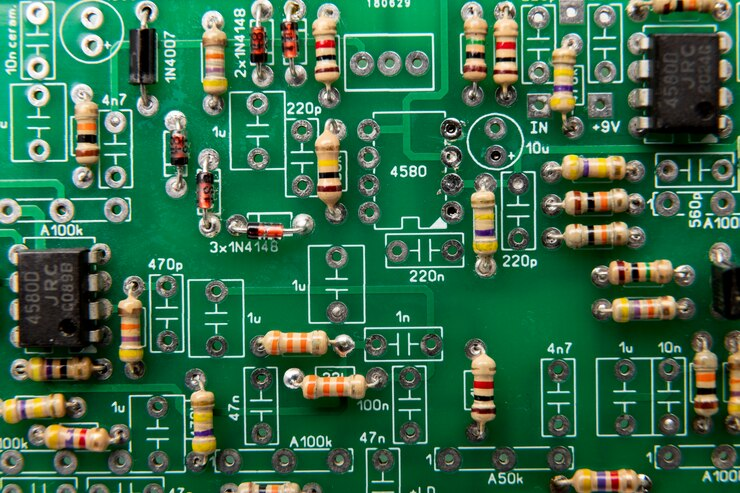

Introduction to Circuit and Electronics#

Significance of Circuit Analysis in Various Engineering Fields
Circuit analysis is a fundamental skill in many engineering disciplines. It allows engineers to design, understand, and troubleshoot electrical circuits and systems. This analysis is crucial for ensuring the functionality, efficiency, and safety of electronic devices and systems.
Real-World Applications
Electronics
Communication Systems
Power Systems
Note: Although machine learning algorithms are used in circuit design to reduce the time and complexity associated with it, achieving the highest possible accuracy in predictions requires a neural network trained with examples using the RC charging equation (see NN with RC ).
Basic Components:#
Sources, Resistors, Capacitors, Inductors, Sources, Transistors, Op-Amps:#
Resistors: Components that resist the flow of electric current, creating a voltage drop and dissipating energy as heat.
Capacitors: Devices that store and release electrical energy by accumulating charge on their plates.
Inductors: Coils of wire that store energy in a magnetic field when current passes through them.
Sources: Components that provide electrical power, such as batteries or voltage/current sources.
Transistors: Semiconductor devices used to amplify or switch electronic signals, including Bipolar Junction Transistors (BJT) and Field-Effect Transistors (FET).
Op-Amps: Operational amplifiers are high-gain voltage amplifiers with differential inputs, used in various signal processing applications.
schemdraw#
The schemdraw module allows for drawing circuit elements.
import schemdraw
import schemdraw.elements as elm
with schemdraw.Drawing():
elm.Resistor().right().label('1Ω')
elm.Capacitor().down().label('10μF')
elm.Line().left()
elm.SourceSin().up().label('10V')
---------------------------------------------------------------------------
ModuleNotFoundError Traceback (most recent call last)
Cell In[1], line 1
----> 1 import schemdraw
2 import schemdraw.elements as elm
4 with schemdraw.Drawing():
ModuleNotFoundError: No module named 'schemdraw'
import schemdraw
import schemdraw.elements as elm
with schemdraw.Drawing() as d:
d.config(inches_per_unit=.5, unit=3)
D = elm.Rectifier()
elm.Line().left(d.unit*1.5).at(D.N).dot(open=True).idot()
elm.Line().left(d.unit*1.5).at(D.S).dot(open=True).idot()
G = elm.Gap().toy(D.N).label(['–', 'AC IN', '+'])
top = elm.Line().right(d.unit*3).at(D.E).idot()
Q2 = elm.BjtNpn(circle=True).up().anchor('collector').label('Q2\n2n3055')
elm.Line().down(d.unit/2).at(Q2.base)
Q2b = elm.Dot()
elm.Line().left(d.unit/3)
Q1 = elm.BjtNpn(circle=True).up().anchor('emitter').label('Q1\n 2n3054')
elm.Line().at(Q1.collector).toy(top.center).dot()
elm.Line().down(d.unit/2).at(Q1.base).dot()
elm.Zener().down().reverse().label('D2\n500mA', loc='bot').dot()
G = elm.Ground()
elm.Line().left().dot()
elm.Capacitor(polar=True).up().reverse().label('C2\n100$\\mu$F\n50V', loc='bot').dot()
elm.Line().right().hold()
elm.Resistor().toy(top.end).label('R1\n2.2K\n50V', loc='bot').dot()
d.move(dx=-d.unit, dy=0)
elm.Capacitor(polar=True).toy(G.start).flip().label('C1\n 1000$\\mu$F\n50V').dot().idot()
elm.Line().at(G.start).tox(D.W)
elm.Line().toy(D.W).dot()
elm.Resistor().right().at(Q2b.center).label('R2').label('56$\\Omega$ 1W', loc='bot').dot()
d.push()
elm.Line().toy(top.start).dot()
elm.Line().tox(Q2.emitter)
d.pop()
elm.Capacitor(polar=True).toy(G.start).label('C3\n470$\\mu$F\n50V', loc='bot').dot()
elm.Line().tox(G.start).hold()
elm.Line().right().dot()
elm.Resistor().toy(top.center).label('R3\n10K\n1W', loc='bot').dot()
elm.Line().left().hold()
elm.Line().right()
elm.Dot(open=True)
elm.Gap().toy(G.start).label(['+', '$V_{out}$', '–'])
elm.Dot(open=True)
elm.Line().left()
lcapy#
Draw and analysis circuit lcapy_sim
from lcapy import R, C, L
((R(1) + L(2)) | C(3)).draw()
{kind=link}
Note#
The circuit includes a series resistor and inductor, which are connected in parallel with a capacitor
from lcapy import Circuit
cct = Circuit("""
Q1 3 7 2 pnp; up
W 7 0 ;down
R1 1 2 3e3;right
R2 4 5 1e3;down=0.5
W 5 0_4;down
P1 1 0_1;down=0.5
W 0_1 0;right
W 0 0_4;right
W 3 4;right
V1 1 0_1 5;down =1.5
""")
cct.draw()
{kind=link}
PySpice Installation#
pip3 install pyspice download ngspice-43_64.7z then add to windows path ngspice.exe
import PySpice.Spice.Simulation as simulation
print(dir(simulation))
['ACAnalysisParameters', 'AcSensitivityAnalysisParameters', 'AnalysisParameters', 'CircuitSimulation', 'CircuitSimulator', 'ConfigInstall', 'DCAnalysisParameters', 'DcSensitivityAnalysisParameters', 'DistortionAnalysisParameters', 'MeasureParameters', 'NoiseAnalysisParameters', 'OperatingPointAnalysisParameters', 'PoleZeroAnalysisParameters', 'TransferFunctionAnalysisParameters', 'TransientAnalysisParameters', 'Unit', '__builtins__', '__cached__', '__doc__', '__file__', '__loader__', '__name__', '__package__', '__spec__', '_module_logger', 'as_A', 'as_Degree', 'as_Hz', 'as_V', 'as_s', 'join_dict', 'join_list', 'logging', 'os', 'str_spice', 'u_Degree']
from PySpice.Spice.Netlist import Circuit
from PySpice.Spice.HighLevelElement import SinusoidalVoltageSource
from PySpice.Unit import *
import matplotlib.pyplot as plt
from PySpice.Spice.Library import SpiceLibrary
import numpy as np
dc_offset = 1@u_V
ac_amplitude = 100@u_mV
# Create a circuit
circuit = Circuit('RC Circuit')
#SinusoidalVoltageSource('input', circuit.gnd, 'input',circuit.gnd)
#source = circuit.V('input', 'in', circuit.gnd, dc_offset)
#SinusoidalVoltageSource('input','input',circuit.gnd)
#AcLine()
#('input', circuit.gnd, 'L', rms_voltage=230@u_V, frequency=50@u_Hz)
source=circuit.V(50, 'input', circuit.gnd, 1000 )#@ u_V)
circuit.R(1, 'input', 'output', 1 @ u_kΩ)
circuit.R(2, 'output', circuit.gnd, 2 @ u_kΩ)
#circuit.SinusoidalVoltageSource('input', 'input', circuit.gnd, amplitude=220, frequency=50)
# Simulate the circuit
InputData=np.array([])
OutputData=np.array([])
for voltage in (0,100,3000):
source.dc_value = voltage
simulator = circuit.simulator(temperature=25, nominal_temperature=25)
analysis = simulator.operating_point()
#analysis = simulator.transient(step_time=0.01 @ u_ms, end_time=50 @ u_ms)
InputData=np.append(InputData,analysis['input'])
OutputData=np.append(OutputData,analysis['output'])
# Plot the results
plt.figure(figsize=(10, 6))
plt.plot(InputData,OutputData)
# Add labels and legend
plt.xlabel('Input Voltage')
plt.ylabel('Output Voltage')
plt.title('Voltage Divider Circuit Analysis')
plt.legend()
plt.grid(True)
# Show the plot
plt.show()
C:\Users\Dr\AppData\Local\Temp\ipykernel_6944\75300024.py:45: UserWarning: No artists with labels found to put in legend. Note that artists whose label start with an underscore are ignored when legend() is called with no argument.
plt.legend()
{kind=link}
import PySpice.Logging.Logging as Logging
logger = Logging.setup_logging()
import numpy as np
from PySpice.Spice.Netlist import Circuit
from PySpice.Unit import *
circuit = Circuit("Millman's theorem")
number_of_branches = 3
for i in range(1, number_of_branches +1):
circuit.V('input%u' % i, i, circuit.gnd, i@u_V)
circuit.R(i, i, 'A', i@u_kΩ)
simulator = circuit.simulator(temperature=25, nominal_temperature=25)
analysis = simulator.operating_point()
node_A = analysis.A
print('Node {}: {:5.2f} V'.format(str(node_A), float(node_A)))
Node a: 1.64 V
C:\Users\Dr\AppData\Local\Temp\ipykernel_18812\1259790737.py:23: DeprecationWarning: Conversion of an array with ndim > 0 to a scalar is deprecated, and will error in future. Ensure you extract a single element from your array before performing this operation. (Deprecated NumPy 1.25.)
print('Node {}: {:5.2f} V'.format(str(node_A), float(node_A)))